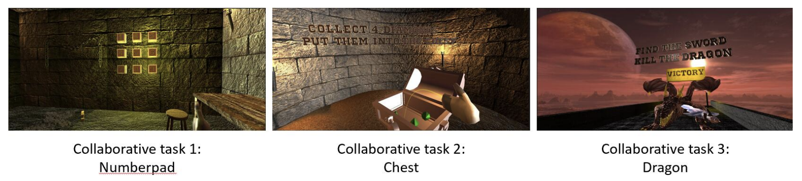
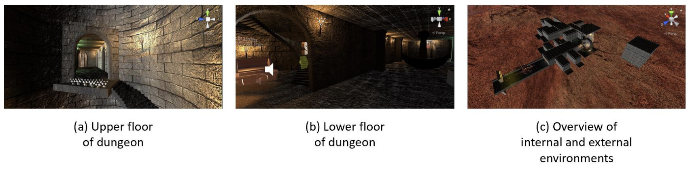
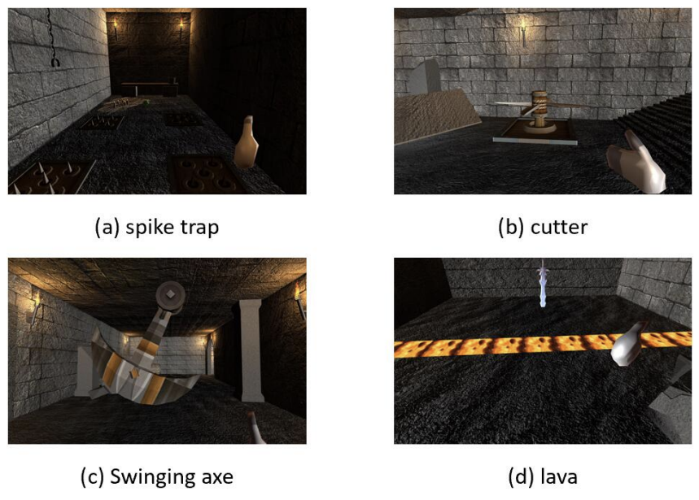

<!DOCTYPE html>
<html lang="en">

<head>

    <meta charset="utf-8">
    <meta name="viewport" content="width=device-width, initial-scale=1, shrink-to-fit=no">
    <meta name="description" content="">
    <meta name="author" content="">

    <title>Escape the Dungeon</title>

    <!-- Bootstrap core CSS -->
    <link href="vendor/bootstrap/css/bootstrap.min.css" rel="stylesheet">

    <!-- Custom fonts for this template -->
    <link
        href="https://fonts.googleapis.com/css?family=Raleway:100,100i,200,200i,300,300i,400,400i,500,500i,600,600i,700,700i,800,800i,900,900i"
        rel="stylesheet">
    <link href="https://fonts.googleapis.com/css?family=Lora:400,400i,700,700i" rel="stylesheet">

    <!-- Custom styles for this template -->
    <link href="css/business-casual.min.css" rel="stylesheet">

    <script src="js/plyr.js"></script>

    <link rel="stylesheet" href="css/plyr.css">

</head>

<body>

    <div class="divider-custom">
        <div class="divider-custom-line"></div>
        <!-- <div class="divider-custom-icon text-center text-white"><i class="fas fa-star"></i></div> -->
        <div class="divider-custom-line"></div>
    </div>

    <!-- Navigation-->
    <!-- <nav class="navbar navbar-expand-lg text-uppercase" id="mainNav"> -->
    <nav class="navbar navbar-expand-lg text-uppercase fixed-top" id="mainNav">
        <div class="container">
            <a class="navbar-brand js-scroll-trigger" href="index.html">HOME</a>
            <button
                class="navbar-toggler navbar-toggler-right text-uppercase font-weight-bold bg-secondary text-white rounded"
                type="button" data-toggle="collapse" data-target="#navbarResponsive" aria-controls="navbarResponsive"
                aria-expanded="false" aria-label="Toggle navigation">
                Menu
                <i class="fas fa-bars"></i>
            </button>
            <div class="collapse navbar-collapse" id="navbarResponsive">
                <ul class="navbar-nav ml-auto">
                    <li class="nav-item mx-0 mx-lg-1"><a class="nav-link py-3 px-0 px-lg-3 rounded js-scroll-trigger"
                            href="index.html">Portfolio</a></li>
                    <li class="nav-item mx-0 mx-lg-1"><a class="nav-link py-3 px-0 px-lg-3 rounded js-scroll-trigger"
                            href="about.html">About</a></li>
                    <li class="nav-item mx-0 mx-lg-1"><a class="nav-link py-3 px-0 px-lg-3 rounded js-scroll-trigger"
                            href="contact.html">Contact</a></li>
                </ul>
            </div>
        </div>
    </nav>

    <div class="row">
    </div>
    <h1 class="site-heading text-center text-white d-none d-lg-block">
        <span class="site-heading-upper mb-3">Escape the Dungeon</span>
        <span class="site-heading-upper text-primary mb-3">In Virtual Reality</span>
    </h1>


    <section class="page-section">
        <div class="container">
            <div class="product-item">
                <!-- <div class="product-item-title d-flex"> 单侧-->
                <div class="product-item-title">
                    <div class="bg-faded p-5  ml-auto rounded">
                        <h2 class="section-heading mb-0">
                            <span class="section-heading-upper">Escape the Dungeon</span>
                            <span class="section-heading-lower">Overview</span>
                        </h2>
                        <p class="mb-3">This group project presents a game-like social environment in Virtual Reality. The game starts inside a Dungeon
                            which is guarded by a dragon, and requires two players two join the game. The main goal for the two players
                            is to complete a series of missions and tasks by collaborating with each other and finally acquire the ability to
                            beat the dragon in order to escape from the Dungeon.</p>

                        <h2 class="section-heading mb-0">
                                <span class="section-heading-upper">Escape the Dungeon</span>
                                <span class="section-heading-lower">Collabrative Tasks</span>
                        </h2>

                        <p class="mb-3">In general, there are 3 missions for the player to complete together in order to win the game. Before the player
                            enter the game scene, there is an entrance lobby which allows users to join a game room or create a new room
                            and invite their friends to join.</p>

                        
                        <p class="mb-3 text-center"><strong>Fig.1 Screen captures of different collaborative tasks</strong></p>

                        <p class="mb-3"> Once the two players enter the game scene, each of them will be locked in two different rooms after they
                            join the game. In each room, there is a number pad on the wall inside each room and several gold number
                            bricks around the floor which serve as hints of the password of their teammate’s room. The two players must
                            exchange the information through voice communication in order to solve the puzzle of each other’s room. The
                            door will be unlocked only when the players click the 3 digit numbers in the correct order, and the information
                            of the correct order of a room only exist in other room. So the task of this stage for players is to exchange
                            information and solve the puzzle by collaborating through voice communication.</p>

                        <p class="mb-3">After the players leave their room successfully, they would need to complete the second collaborative task.
                            As we all heard that dragons are greedy and addicted to collect shining jewels, the mission of the players is
                            to collect all the four diamonds and put them into the chest. It will attract the dragon to open the only exit
                            door. However, it is definitely not an easy work to collect the diamonds. Players are asked to overcome some
                            traps and they need cooperate with each other to activate the triggers which are necessary to get those precious
                            diamonds. Players cannot collect all diamonds without cooperation because it is necessary to ask another player
                            for help in some triggers!</p>

                        <p class="mb-3">Finally, if the players successfully collect all the diamonds and put them into the chest, it’s time for our
                            players to escape the dungeon! Unfortunately, the greedy dragon waiting behind the exit door seems ready for
                            a big meal. With no chance to avoid the fight, our poor players know that their final task is to kill the dragon.
                            They need to go back to the dungeon and find something to armour themselves. And there is a legendary
                            sword stored in the depth of the dungeon which is surrounded by lava. Our players should use some tools from
                            the surrounding environment to help themselves across the lava and get the sword. Because the poison on the
                            surface of the sword is a huge threat to the dragon’s life, the players could then easily kill the dragon with the
                            sword. After escaping from the dungeon, our players finally win the game.</p>

                        <h2 class="section-heading mb-0">
                            <span class="section-heading-upper">Escape the Dungeon</span>
                            <span class="section-heading-lower">In-environment instructions</span>
                        </h2>
                        <p class="mb-3">In order to let players get familiar with the game quick and have a clear awareness of the task at every stage,
                            we set up word instructions to guide some key steps. Moreover, we try to use more visual and acoustic ways
                            to guide players intuitively, such as using different eye-catching colour lights as hint in for some rooms and
                            triggers, and include door-openning and various background sound when triggers activate remotely in order to
                            let the users to have a more immersive game experience.                            
                        </p>

                        <h2 class="section-heading mb-0">
                            <span class="section-heading-upper">Escape the Dungeon</span>
                            <span class="section-heading-lower">implementations</span>
                        </h2>

                        <p class="mb-3"><strong>1 Scene and Props</strong>                         
                        </p>                    
                        <p class="mb-3">To start with, the scene was built with several packages from the asset store. For environment, we imported
                            sky from Skybox Series Free, and also building templates from Decrepit Dungeon LITE. For better interaction,
                            we imported 3D text from All Packages Demo, buttons from Interactive Physical Door Pack. We also imported
                            some properties, such as treasure chest from Treasure Set, diamonds from Simple Gems Ultimate Animated
                            Customizable Pack, dragon model from Dragon for Boss Monster : PBR, traps from Dungeon Traps, lava from
                            Lava Flowing Shader and sword from Magic swords; arrows from Arrow Pointer. Then we modify those assets
                            for our own variants. Figure below is the overview of the scene.</p>

                        

                        <p class="mb-3 text-center"><strong>Fig.2 Scene</strong>
                        </p>

                        <p class="mb-3">Our scene consists of two parts: internal environment and external environment. The internal environment
                            is a dungeon, divided into upper and lower floors; the external environment consists of the dungeon’s exit and
                            an entrance lobby for the player to enter the game scene.</p>

                        <p class="mb-3"><strong>2 Graspable Object</strong>                         
                        </p>   

                        <p class="mb-3">There are three kinds of objects that can be grasped in this game: diamonds, sword and boards. Diamonds are
                            the target of second social task, sword is used to kill the dragon, and boards are used to go through traps.</p>

                        <p class="mb-3">At first, we use bulit-in function in GameObject to find Player via its name, and then compute the distance
                            between Player and diamond. Players will only be able to grab diamonds if their distance is less than 5.0;
                            otherwise players can get diamonds from far away instead of going through traps.
                            Moreover, in the Update function of this script, we assign controller’s rotation and position to diamond in
                            each frame, so the diamond Will move with the player’s grab. Remaining implementations of other two kinds
                            of grasp objects are similar.</p>

                        <p class="mb-3"><strong>3 Trap</strong>                         
                        </p>   
    
                        <p class="mb-3">There are several kinds of traps: spike trap, cutter, swinging axe and lava on the ground. They are placed on
                            the players’ only path to obtain diamonds. To get diamonds, players must cleverly find ways to pass through
                            traps. Once the players trigger the trap, they are sent back to their original location and cannot obtain diamonds. To
                            achieve this, we rewrite the function OnCollisionEnter to judge whether Player collides with traps. Figure below shows those traps.
                        </p>

                        

                        <p class="mb-3 text-center"><strong>Fig.3 Traps</strong>
                        </p>
    
                        <p class="mb-3">Spike trap, cutter and swinging sway regularly, so it is necessary to find the law of their operation to avoid
                            them. For lava on the ground, players need to find graspable boards and place them on lava to get through it.
                            Tips on how to get through the lava are given to player 1, who informs player 2, and only player 2 needs to get
                            through the lava.</p>
                        
                        <p class="mb-3"><strong>4 Door Trigger</strong>                         
                        </p>   
        
                        <p class="mb-3">There are several kinds of door triggers: Number pad trigger, Step-on trigger and Chest trigger.</p>
                        
                        <p class="mb-3"><strong>Number pad triggers:</strong> There are two doors that require players to click on the number pads which are placed
                            on the wall in the two initial rooms. In each initial room, there is a 3 digit number clue hidden in the room.
                            The 3 digit number is the hints of the password for the room where the player’s teammate located at. The two
                            players must find the 3 digit number clue from the room and exchange that information with their teammate
                            through voice communication in order to escape from their room. Once the player clicks the 3 numbers in the
                            correct order, the door will open. To achieve this, we set the password in advance as a string form. Every time
                            when we click the button, we append a string by adding the number we clicked, and then compare it to the
                            password. If the string matched the password we initially set up, we rotate the door to be open.
                        </p>

                        <p class="mb-3"><strong>Step-on triggers:</strong> The are two Step-on triggers that are placed next to two doors outside the room which
                            contains diamonds. The upstairs doors will maintain open when the downstairs trigger are stepped on consistently by the other player, and so does the upstairs trigger work. Therefore, it is necessary for each player to
                            collaborate with their partner to activate the step-on triggers in order to open the door and get the diamonds
                            inside the room.
                        </p>

                        <p class="mb-3"><strong>Chest triggers:</strong> The chest trigger opens the victory door that player could exit the dungeon. The exit door
                            will open after all the 4 diamonds have been collected by the players and have been put into the chest. To
                            implement it, we used a variable diamoundCount to record the number of diamonds that have been put into
                            the chest(detected by collision). We also set a flag isCollected to check if the diamond has collided with the
                            chest to prevent repeated scoring of a single diamond.
                            
                        </p>

                        <p class="mb-3"><strong>5 Synchronization of multiple scenes</strong>                         
                        </p>   
        
                        <p class="mb-3">Synchronization of different scenes means that the scene where each individual player in should be networked
                            and synchronized. To be specific, any changes of the game objects in one player’s scene should also be faithfully
                            reflected in all other players’ scene at the same time. Throughout experiment, we surprisingly found that in fact
                            not all the game objects are needed to be networked and we have carefully chosen some critical game objects
                            that are necessary to be synchronized in order to achieve the best performance.
                            </p>
                        
                        <p class="mb-3">There are 4 different types of game object that should be networked including diamonds,
                            sword, wooden boards, and the doors with triggers to click. For the first 3 types of object, their position and
                            rotation would be changed dynamically during game time since they would be carried around by the players.
                            For the wooden doors with triggers, the rotation would change after one of the player clicks the corresponding
                            trigger. In order to achieve synchronization between multiple scenes, the same object in each scene should be
                            given with an identical id. For this reason, we have tried 3 different methods to obtain an unique id for those
                            objects that are needed to be networked. A simple method is to manually set a specific value as the id of the
                            object.
                        </p>

                        <p class="mb-3">However, this naive approach could easily cause conflicts if a same id was accidentally given to two different
                            game objects. To address this issue, we then tried to set the id based on the timestamp of the player once the program started.While this method could generate an unique id, another problem is that the id of the same object in different
                            player’s scene could be very distinctive as the players may join the game room at a different time, and therefore
                            this method is also discarded.
                        </p>

                        <p class="mb-3">The final solution that we adopted is to combine the object’s position and rotation. As every object within the
                            scene would have a distinctive position and rotation, this approach reduced the risk of having id conflict causing
                            by the naive method, while still ensuring an unique id value could be given to the same object in different
                            player’s scene regardless of the joining time the players.
                            After setting up the id for the networked object, their position and rotation information would be updated
                            between each other via Json message.
                        </p>
    

                        <h2 class="section-heading mb-0">
                            <span class="section-heading-upper">Escape the Dungeon</span>
                            <span class="section-heading-lower">Conclusion</span>
                        </h2>

                        <p class="mb-3">Our group builds a well functioning and fully immersive Virtual Reality game that consists of
                            different forms of highly collaborative tasks for players to complete in order to win the game.
                            The users need to interact with different game objects within the VR environment such as collecting the
                            diamonds and using the wooden board to pass through the lava, as well as clicking on the button in order to
                            leave the locked room. Moreover, the scene of each players have been synchronized so that they share the same
                            experience within the game.
                            Furthermore, the game make use of various background sound in order to allow the users to enjoy a fully
                            immersive game experience. Also, the visual style of the inside environment such as the weapons and decorations inside the dungeon, are designed to be consistent with the outside of the dungeon. We adopted a high
                            quality skybox material to simulate the outer environment when the player exit the dungeon.
                            </p>

                        <!-- <video width="900" autoplay="autoplay" contrls="controls">
                            <source src="img/project/project_card/mltest.mp4" type="video/mp4"> -->
                        <!-- </source> plyr.css与plyr.js必须放入css文件与js文件夹中-->
                        <!-- </video>
                            <script>
                                plyr.setup();
                            </script> -->
                    </div>
                </div>
            </div>
        </div>
    </section>

    <!-- Footer-->
    <footer class="footer text-center">
        <div class="container">
            <div class="row">
                <!-- Footer Location-->
                <div class="col-lg-4 mb-5 mb-lg-0">
                    <h4 class="text-uppercase mb-4">Address</h4>
                    <p class="lead mb-0">
                        36-40 Copperfield Road
                        <br />
                        London, UK
                    </p>
                </div>
                <!-- Footer Social Icons-->
                <div class="col-lg-4 mb-5 mb-lg-0">
                    <h4 class="text-uppercase mb-4">Contact</h4>
                    <p class="lead mb-0">
                        +44 770-858-5594
                    </p>
                    <p class=" mb-0">
                        weiyuan.deng.21@ucl.ac.uk
                    </p>
                    <!-- <a class="btn btn-outline-light btn-social mx-1" href="#!"><i
                            class="fab fa-fw fa-facebook-f"></i></a>
                    <a class="btn btn-outline-light btn-social mx-1" href="#!"><i class="fab fa-fw fa-twitter"></i></a>
                    <a class="btn btn-outline-light btn-social mx-1" href="#!"><i
                            class="fab fa-fw fa-linkedin-in"></i></a>
                    <a class="btn btn-outline-light btn-social mx-1" href="#!"><i class="fab fa-fw fa-dribbble"></i></a> -->
                </div>
                <!-- Footer About Text-->
                <div class="col-lg-4">
                    <h4 class="text-uppercase mb-4">About Me</h4>
                    <p class="lead mb-0">
                        Here is a link to my
                        <a href="cv/CV_WeiyuanDEng.pdf">Resume</a>
                        .
                    </p>
                </div>
                <div class="container">
                    <pre>
                    </pre>
                </div>
                <div class="container">
                    <p class="mb-3 mb-lg-0 small">Weiyuan DENG &copy; Portfolio 2023</p>
                </div>
            </div>
        </div>
    </footer>

    <!-- Bootstrap core JavaScript -->
    <script src="vendor/jquery/jquery.min.js"></script>
    <script src="vendor/bootstrap/js/bootstrap.bundle.min.js"></script>

</body>

</html>